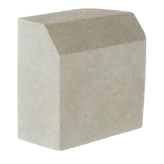

Kerb Stones

Available Sizes (mm) (L X W X H)
300 X 150 X 350
300 X 150 X 450
160 X 100 X 190 (K-2)
300 X 150 X 450
160 X 100 X 190 (K-2)
Features
• Durability in Harsh Conditions
Designed to withstand the elements, our kerb stones excel in harsh weather conditions. Resistant
to extreme temperatures, heavy rainfall, and UV exposure, they maintain their integrity and
appearance over time. This durability makes them ideal for use in diverse climates and ensures
they continue to look and function effectively regardless of environmental challenges.
• Easy Installation
Kerb stones are designed for straightforward installation, thanks to their precise dimensions
and interlocking features. This ease of installation reduces labor time and simplifies the
process, making it quicker and more efficient. Whether you’re working on a large-scale
infrastructure project or a small landscaping job, our kerb stones streamline the installation
process and deliver reliable results.
• High Compressive Strength
Our kerb stones are engineered with superior compressive strength, making them perfect for
applications that demand resilience and durability. Capable of withstanding heavy loads and high
traffic, these kerb stones provide a robust solution for road edges, pathways, and parking
areas. Their ability to endure significant pressure ensures long-lasting stability